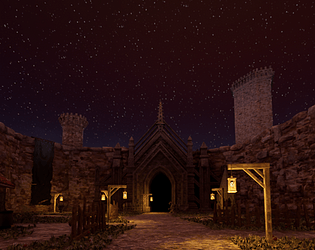
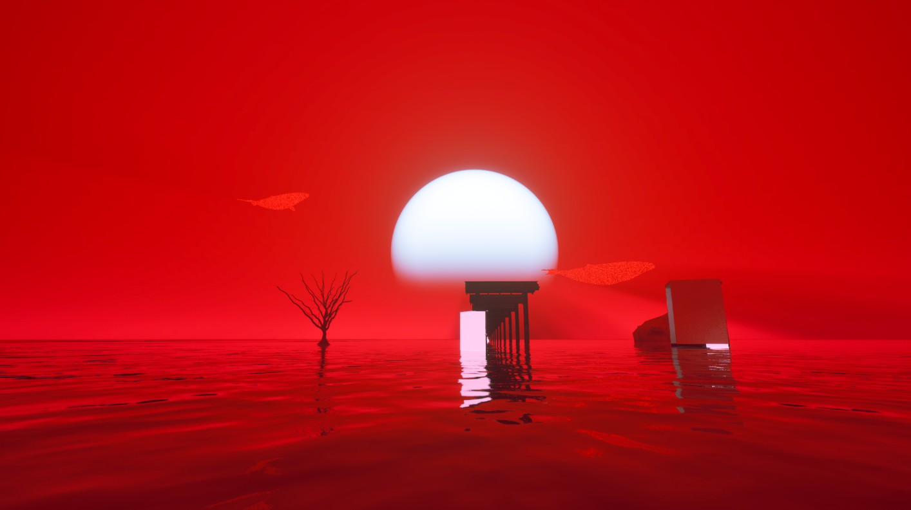

What I have accomplished
As a game developer, I've worked on diverse projects using Unreal Engine and other tools. I've explored various creative avenues, from immersive game experiences to web applications. Each project has fueled my passion for game development and expanded my skill set.
My game development projects
Click the Images for links to my Projects!
- /// Choppers Rampage ///
Choppers Rampage was my first-ever game I made and published, it was made by Bitsy game engine which was perfect for a simple story horror game, the game talks about a man who experiences the horror of a serial killer that haunts him. I eventually finished and published the game on Itch.io.

- /// Bugzy ninja ///
Bugzy Ninja was my first game on Unity game engine that I made and published on itch.io. The game is about a small ninja running away from a giant bug in hopes of escaping, collecting items for the score and powerups on the way.

- /// Walks on Your Skin prologue ///
WOYS prologue was made as a beginning project on Unreal engine 5 which introduced me to all its features and made me love Unreal.This project was later adjusted to become a walking simulator and a project for a course called DATT3300.The game is about a murderer in the forest and you plan to find out who is doing the coming atrocities

- /// HorrorHugger ///
Horror Hugger is an unreal engine 5 project that I led and managed with 5 different team members throughout the semester. It is a fully fledged story game about a King with a plethora of hand made mazes and how he must save his people with the power of hugging and shoving.
- /// Sneaky Slumbers ///
Sneaky Slumbers is an Unreal engine game that I worked on with my team members for a course in University as a passion project, where you must sneak through security guards in a dystopian orphanage by pretending to sleep or snore to escape

- /// Dissolution ///
This is a short first-person experience about exploring unique levels and finding new ways of interacting with the world around you. As you unravel the mystery of the game, listen to the brief ruminations of a man coming to turns with his existence.
- /// Grave (Digger///Runner) ///
An unreal engine 5 game that was varied on my targets for the course where one variant is a Boss rush(Diggers) and another is a Boss Run(Runners) . Me and my team took a month to make these variations on our game.
//Game one

//Game two

My Other Projects
- /// Focus fiends startup web app ///
This website was made for a course called DATT/2100 Publishing in digital media, the website serves as a startup for an app called focus fiends which allows individuals to focus off their devices in coordination with a friend or creature for inspiration. The website was made on Wix and features content and assets from canva such as the app preview and the video animation